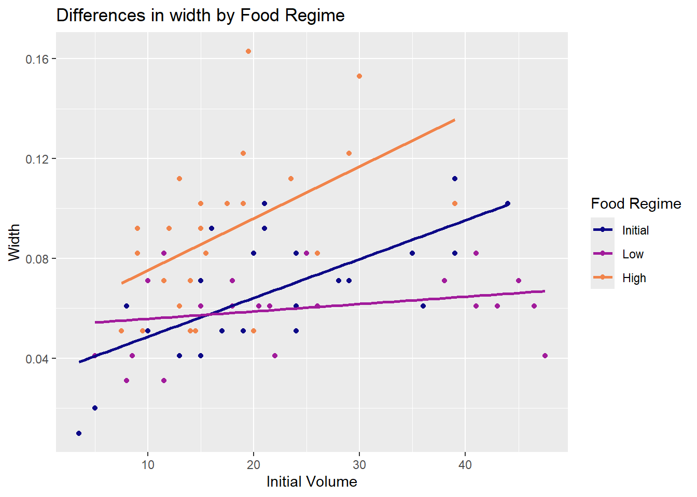
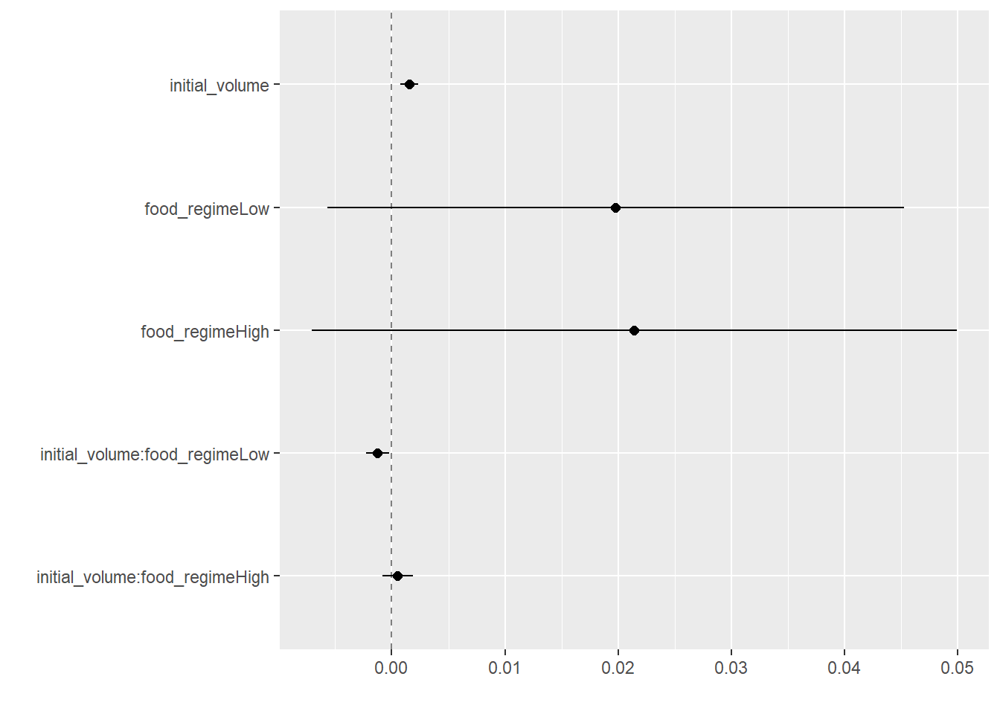
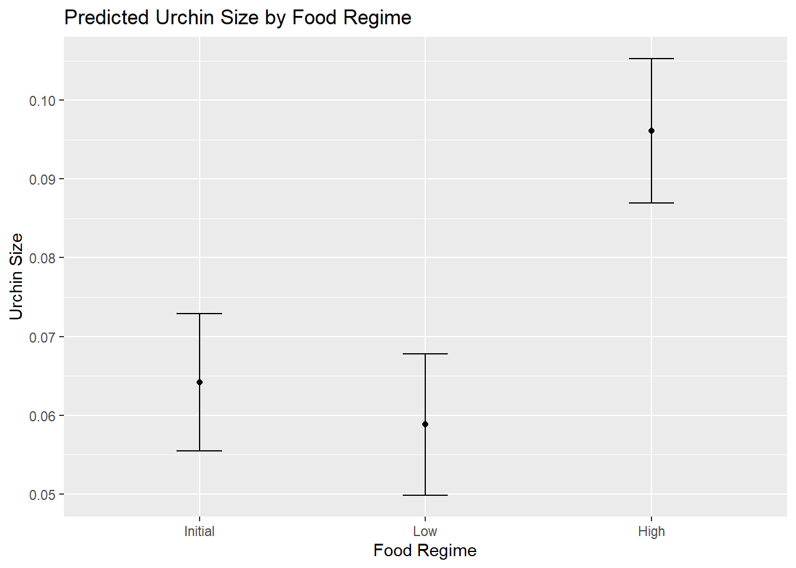
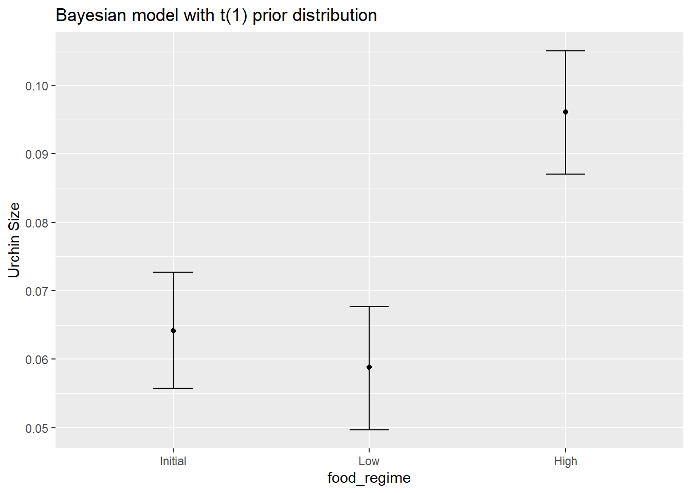
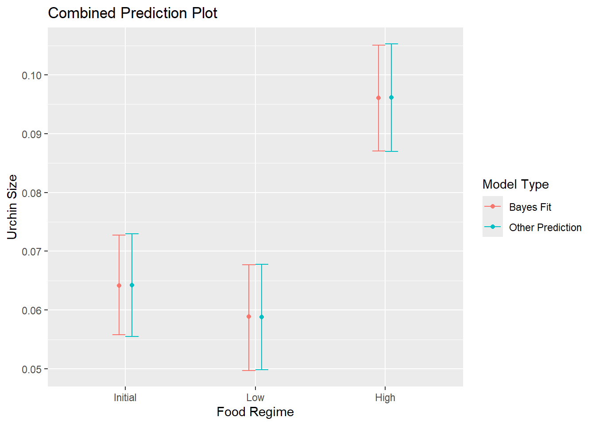

food_regime initial_volume width
1 Initial 3.5 0.010
2 Initial 5.0 0.020
3 Initial 8.0 0.061
4 Initial 10.0 0.051
5 Initial 13.0 0.041
6 Initial 13.0 0.061Feeding Regime Impact of Sea Urchin Size
Sea Urchins and Feeding Regimes
The data used in this document, is taken from the paper: Constable(1993)
In this paper, they are trying to assess:
“whether a decrease in the width of sutures is the basis for shrinking of the test in echinoids under conditions of low food availability and whether the body condition of sea urchins is likely to be retained when shrinking occurs.”
For our purposes however, we just want to produce a model without much reference to the original hypothesis - and aim to understand what the data may be showing us.
So: first we need to load the data, and then we will present the top 10 rows in the tibble.
Now that we have the tibble available, we will want to graph it so that we can see the relationships between the different feeding patterns.

Initial Observations
It seems that based on the distribution of the points, that those with higher starting volumes, had higher widths at the end. Additionally, the above graph shows that there is a potential relationship between the feeding pattern and growth. We can tell this based on the slopes of each curve. The slopes for initial and high look roughly similar, although high has a much higher starting width.
The slope for low indicates this may have the most pronounced effect.
This is roughly what we would expect based on the initial experiment’s paper.
However, we will want more than our own intuition to make this claim, so we will need to produce further evidence to support this.
Linear Model
Given a continuous predictor and a categorical predictor, a two-way ANOVA makes sense. In R a standard OLS regression would look like:
lm(width ~ initial_volume * food_regime, urchins)
Call:
lm(formula = width ~ initial_volume * food_regime, data = urchins)
Coefficients:
(Intercept) initial_volume
0.0331216 0.0015546
food_regimeLow food_regimeHigh
0.0197824 0.0214111
initial_volume:food_regimeLow initial_volume:food_regimeHigh
-0.0012594 0.0005254 lm() or linear_reg()?
Using lm in R means we use the OLS regression. However, if we insteaduse linear_reg(), we can specify which type of linear model we want - here we will just specify the default model,but later we will use a Bayesian model.
A benefit of using linear_reg(), is that we can also parameterise our models in automated pipelines, with minimal code changes necessary.
linear_reg()
So let’s use linear_reg()
Let’s specify our linear model, with interaction effects. IF you are not sure, an interaction effect allows us to model the interaction of two variables. Here for example, it will allow us to look at initial_volume by food_regime. It will typically use the first value in the second variable as a “reference point”. In our case it is the initial food regime.
parsnip model object
Call:
stats::lm(formula = width ~ initial_volume * food_regime, data = data)
Coefficients:
(Intercept) initial_volume
0.0331216 0.0015546
food_regimeLow food_regimeHigh
0.0197824 0.0214111
initial_volume:food_regimeLow initial_volume:food_regimeHigh
-0.0012594 0.0005254 and finally lets display it as a tibble:
# A tibble: 6 × 5
term estimate std.error statistic p.value
<chr> <dbl> <dbl> <dbl> <dbl>
1 (Intercept) 0.0331 0.00962 3.44 0.00100
2 initial_volume 0.00155 0.000398 3.91 0.000222
3 food_regimeLow 0.0198 0.0130 1.52 0.133
4 food_regimeHigh 0.0214 0.0145 1.47 0.145
5 initial_volume:food_regimeLow -0.00126 0.000510 -2.47 0.0162
6 initial_volume:food_regimeHigh 0.000525 0.000702 0.748 0.457 As you can see, a tibble is much easier to read the outputs. This is useful.
Dot and Whisker Plot
To break up the text a little, lets plot our estimates using a dot and whisker plot.
A dot‐and‐whisker plot is more about showing an estimate and its precision, whereas a box plot provides a snapshot of the overall data distribution.
How to interpret a Dot and Whisker plot
Whilst, it may look like a boxplot, it can not be interpreted the same way!
The “dots” represent a point estimate - in our case: the regression coefficient. The whiskers extend from each dot to show the uncertainty around that estimate. (Typically, they represent a 95% confidence interval)
If the whiskers do not cross a reference value (commonly zero), the corresponding estimate might be considered statistically significant.
When multiple dots (estimates) are shown on the same plot, you can compare their positions and the widths of their intervals. Closer dots with overlapping whiskers might indicate similar estimates or effects, while non-overlapping intervals suggest meaningful differences.

Interpreting our Plot
Our CI’s for both food regimes appear to cross or include zero. This means that, statistically, none of these coefficients is different from zero.
The interaction effects for
initial_volume * food_regimemay not have a strong or statistically significant effect on the outcome.However, a low food regime whilst having a small effect size, does appear to be potentially significant compared with the reference feeding regime. In low food environments, sea urchins may shrink! Which, is part of the original experiment design!
So, knowing nothing about sea urchins, and their feeding schedule. We can determine, that lowering their food beyond a baseline reference point may cause them to shrink, however increasing it above this point may not have any robust effects. that’s pretty neat!
Making Predictions
So, lets assume we still wanted to make some predictions based on this.
So we will assume we have several new sea urchins, each of which has an initial volume of 20ml, and allocated to a specific food regime.
initial_volume food_regime
1 20 Initial
2 20 Low
3 20 HighWe can use the predict() function to find the mean values. We can use our previously fitted model lm_fit, and pass in our new_points values like so:
predict(lm_fit, new_data = new_points)
This will produce a tibble:
# A tibble: 3 × 1
.pred
<dbl>
1 0.0642
2 0.0588
3 0.0961Lets add some CI’s (Confidence Interval’s)
# A tibble: 3 × 2
.pred_lower .pred_upper
<dbl> <dbl>
1 0.0555 0.0729
2 0.0499 0.0678
3 0.0870 0.105 and then we can merge them together for another tibble:
initial_volume food_regime .pred .pred_lower .pred_upper
1 20 Initial 0.06421443 0.05549934 0.07292952
2 20 Low 0.05880940 0.04986251 0.06775629
3 20 High 0.09613343 0.08696233 0.10530453and finally, let’s plot

The above graph, will give us an understanding of the the impact of Food Regime on size of sea urchins, assuming the starting size is 20ml.
However, bear in mind that previously the high feeding regime was not statistically significant. We would need some theory to better understand this, however on the face of it. Feeding regime doesn’t seem to have a particularly large effect for the Low regime.
Bayesian Approach
Now, lets try this again but with a Bayesian approach!
For a Bayesian approach, we first need to declare a prior distribution for each model parameter. We decided to take a conservative approach and make the priors wide using a Cauchy distribution (which is the same as a t-distribution with a single degree of freedom).
We will specify our seed with set.seed(123) and we will specify our prior distribution:
prior_dist <- rstanarm::student_t(df = 1)
Before specifying our Bayesian model
Now lets print the table in a tidy tibble as before.
# A tibble: 6 × 5
term estimate std.error conf.low conf.high
<chr> <dbl> <dbl> <dbl> <dbl>
1 (Intercept) 0.0330 0.00983 0.0165 0.0488
2 initial_volume 0.00155 0.000401 0.000899 0.00225
3 food_regimeLow 0.0203 0.0133 -0.00165 0.0420
4 food_regimeHigh 0.0211 0.0147 -0.00243 0.0459
5 initial_volume:food_regimeLow -0.00128 0.000508 -0.00212 -0.000411
6 initial_volume:food_regimeHigh 0.000535 0.000712 -0.000656 0.00171 Bayesian interpretation?
In a Bayesian framework, we typically do not get a classic p-value.
Instead, Bayesian models provide posterior distributions for each parameter (coefficient). From those posterior distributions, we can assess the plausibility of different parameter values in ways that differ from the frequentist approach of p-values.
Credible intervals are the Bayesian analog to confidence intervals. A 95% credible interval around a parameter means that there is a 95% probability (according to your model and priors) that the parameter lies within that interval.
If the entire 95% (or 90%, etc.) credible interval is above 0, that indicates strong evidence the true effect is positive. If it is entirely below 0, that indicates strong evidence the effect is negative.
If the interval straddles 0, it suggests uncertainty about the sign of the effect (though you can still look at the shape of the posterior distribution for more nuance).
Bayesian analysis emphasizes checking how well the model predicts new or withheld data. You can:
Visualize posterior predictive distributions and compare them to observed data.
Use WAIC, LOO, or other model comparison criteria to see which model best explains the data.
The Bayesian perspective is often considered more intuitive: you directly assess the probability that a parameter lies in a certain range using theory and some say intuition, rather than relying on a “yes/no” significance test from a p-value. However, because of the subjective nature of priors, it has some detractors among the frequentist crowd.
Bayesian Prediction
Now we can use this model to build a prediction for a starting size of 20ml again
I will skip the code, and instead showcase the newly produced plot.

As you can see, this isn’t very different from the non-Bayesian results.
Let’s plot them side by side so we have an easier time comparing them. To do this we need to bind the data from both models into a ssingular data-frame using bind_rows like so:
bayes_plot_data$model <- "Bayes Fit"
plot_data$model <- "Other Prediction"
combined_data <- dplyr::bind_rows(bayes_plot_data, plot_data)
Then we shall produce a plot similiar to before.

Now, as we can easily see, these two model approaches are pretty similar! Neat.